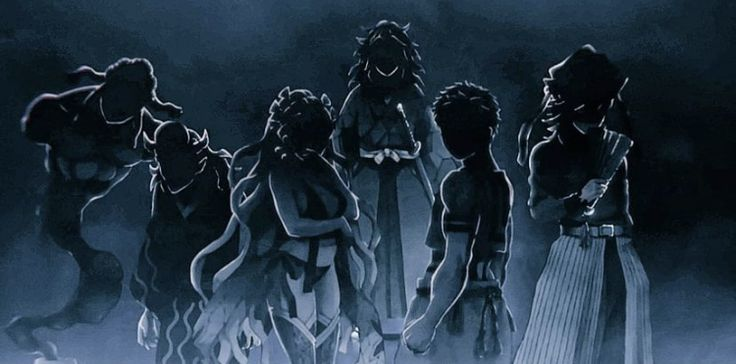

No one found los angeles and could the angels have already found no man's land. Griffin heard what his wife camilio had to say. He knew the only way to conferm it was to suck akuma's blood but he refuses to do that to him cause he looks pure and it's not possible for him to hurt such creature anymore which is crying. Kota says that his father is too soft specially when he's the king of devils in their kingdome. Akane tells kota that griffin is said to be the weakest devil king due to him being symphetic. Kota is super childish and cheerful while akane is always silent and is talking when she has something to say useful. Camilio is a slave of the king to bear his child. She failed to produce a single male child. She's bearing a child right now. Acording to the traditions she'll be exicuted if this offspring of the devil king is also turned out to be a female. That's how their system works. Not that griffin wanted this to be the rules but he can't go against anything even when he's not agreeing with it. Inspite of being the devil king.
Akuma was taken to a ceremony type place. This happens to be the day their first king died. Griffin doesn't knows the history and a elderly man appears named william. He tells griffin that their first king was the very man who was able to seperate the devils and angels. Thousand years ago god send humens to their world but they ate some fruit from the forbidden tree that still exists. They unlocked their hidden emotions and unlocked what they desired to be to it's full potential. There was created good and evil. Angels and devils. A matter to be noted that these angels and devils are a mere imitations to re create the heavens and hell on earth. The devils were at their peak curse and the angels were at their purest forms untill just like a sword that looses it's sharpness as long as it is being used. The devils slowly lost their cruel behaviour and the angels slowly lost their puerity. Now the angels and devils are sworn enimies due to the sin commited by their ansestors. By drinking angel blood and their flesh. It is said that angel flesh tastes heavenly.
They haven't lost 100% of their brutality and being a menesh is considered a short of respect in devil socity. Brutality is a status of power and while the devils were loosing their pure worse both being started sivilization and the first king actually wasn't the first king. The reason he is remembered as the first king is the reason he fought the demon lord and saved the world as a sign that even a devil has worth. He was the strongest devil in considered and as a respect of his existence they celebrate the arrival of their first king in a new form and body. Soon in the next thousand years a decendent of his pure blood will arive from nowhere and will lead creation to it's most freedom. He'll be labeled as the god of devils. The way they can recognize the returning god is by the left over soul stone of their first king. Every devil is born with a black magic or a soul stone. And every angel has their own counter part of magic. What could be the name of that magic is out of their knoledge. But they do know it's similer since they gained power from a single tree and a single existing bloodline that took many roots.
Right now as the aniversery of a thousand years of their first king's death they must start the festival to see which person bears the blood of the first king in his veins. They all come by turns and look at a statue which is hung like jeasus and tries using their black magic power which is red in color and try commanding the stone. "Magic stone show me your worth is what they all say" They are all from different ages. Any age of person at all can enter this since it'll keep going untill every person in the kingdome has done it. It happens every year and last year it took 4 days for everyone to do so. Usually the royalti's make their entrence first but this year they decided to do it at the very last. Seems like their turn came. Kota went forward and said something else. She said "Give me strength magical stone" Everyone calls it magical stone. Kota fails to get the stone to react and reach out to her. Some people have lost faith in griffin's bloodline since no one from his blood line has ever reacted to the stone. It is said that the soul stone will only react to a man since the soul stone of a man and a woman is different in shape sometimes and on top of that the kings of griffin's blood lline had several kids from different woman in the past but none of the boys got the soul stone to react. Griffin doesn't want to take the same route cause he's failing to produce a single man.
Soon he'll have no option but to kill of camilio like his ansestors due to their rules. Griffin hates those rules. No akane came and made the sould stone react a bit but she failed to do it properly in the end. She says she'll surely do it next year. Her father was dissopointed and this made akane sad. She apologises being a falure and griffin tells her that nothing can be done about that. She is more sadden. Now griffin tries it himsef and manages to light it up a bit but it failed too in the end. He too is a falure. Everyone was preparing to go home but william sait that they should see if it reacts to akuma's cry since he's the only person who didn't took part in the ceremony. Even newborns are allowed to take part. Grffin does so and takes akuma and makes him lay on the stage type place and akuma as a child didn't wanted to let loose. Grffin said he isn't sacrifising him so he can stop crying. Griffin leaves akuma and watches as he cries for a few minutes. He wonderes what they can possibly achieve from this. Suddenly the moon turned red and the entire world was shaking. The entire kingdome turned morning for a second. It was a looner eclips. The stone reacted to akuma's heart and tried clinging onto it but he refused the stone himself. The stone returned to it's place. The looner eclips ended. What just happend right now. It shocked everyone.
What exactly was it. William started shuting. It was divine intuation as a sign of the birth of the devil god in their socity. The devil god refused the worthless power he left behind in his previous life and now is hugry for his new life. They must pay their absulute respect to him. Griffin was shocked to see that. What are the chances that he took a kid who just so happend to be the profisised one. Camilio came and told griffin that it wasn't fate. Just a happy coincedence since it's said that the first king could see the future and he must have seen throw this out come for which he must have said such phrofecy. It's no fate and it's just how it pieced together. So he can know that it wasn't devine. Griffin loves camilio's thoughts on stuff like these. (akuma's grown up scean of 13 years is shown in the first and then when ayaka and everyone else was introduced it showed a flashback of how they got friends. So bacially the part taht was written in the first will be a flashback of akuma's 13 year old self to make sure it would symbolize that they were friends for a long time.) A few long years pass by and akuma hates how he's being treated like a god by some people and decided to hide his real identity and go stay with the local people. So he went and made some friends in the locality. The poor area since anyone near the royal area would recognize him. The city is build such way that the noble people live in the center cause they have money and the poor people don't cause land out there is too expencive cause of it's want. Akuma saw some kids playing and decided that he'll make them friends. There were 4 guys out playing.
They were super mean to Akuma and they tried hitting him. He didn't cared and din't resisted the punches. They saw how durable Akuma was and in truth Akuma was not as strong as those kids. He just didn't reacted cause he felt like it would be meaning less to react to such wasted pain. One of the kids transformed into their devil transformation. They look ugly and Akuma wanted to learn that transformation. They were confused. Every devil and every angle has their own transformation. Can't Akuma transform. He turned out to be the only devil who can't transform. They laugh at him. That's when a wild dog looking demon attacked at them. They are devil creatures. There are animals too that have devil and angle counterpart. Akuma got scared of them but turns out it was childs play for those kids to fend off those dogs. Akuma thought that everyone other than him are so strong. Why is everyone so different from him. Akuma leaves that place since he didn't felt like he was treated well out there. Akuma was sad so he went out to a hill near by and saw the tree that had the forbidden fruit. What's the point of having the forbidden fruit when anyone has access to it. Akuma slides throw mountains like it's cake walk and manages to reach the tree like an absulute pro and brings a fruit out of the tree and eats it. There was a devil sitting there to supply information on the tree on current baiss. Akuma said he didn't felt anything at all. That guy was confused. He asked grye how is it even possible to not feel anything. Akuma thought that it was preety sweet.
The fruit is usually sour like orange. How did he found it sweet? Akuma said that he thinks oranges are preety sweet and sour mixed. The guy understood that something is wrong with Akuma's taste. He told Akuma that he'll find his ability in a few seconds. Just wait. Since he needs to not things down. Nothing happend. That guy then brought another apple looking fruit to Akuma saying that he might have ate a faulty fruit. He tosses another fruit to Akuma and nothing happens again. They do it 3 times and nothing happens. The guy eats a fruit himself and he feels the power inside him grow. Dam it he ate his 3rd fruite already. He tossed Akuma the fruit and Akuma didn't felt anything. The man concluded that nothing is wrong with the fruit. Akuma himself is the fault since he's has no aura at all. Aura is the energy used to manupulate black magic. Akuma says that he certainly has aura and he can use it too but he for some reason has no dedicated magic to it. That man told Akuma that it's techniq. No one calls it magic. It is only called black magic as a disrespect since the first ones to use this techniq used it for evil. Akuma says that he likes the word magic cause those techniqs are magical. That man gives up and tells Akuma to go home since he's a defected. Akuma asked what it means and that man spells it out for him that his existence is defected cause he was born a falure.
He doens't wants to know more so he recomends Akuma to leave. Akuma leaves and was sad. Why is he so weak and why is everyone so wierd and different from him. He doesn't likes the way it is. A girl was hanging on tree and she asked Akuma that he looks strong. She saw everything that happend. He looks a lot like an angel. Is he secretly a spy from angels? Akuma refuses such aligations and tells that girl that he is a devil like them or at least that's as much as his knoledge goes since he isn't sure about his existence too. That girl introduces herself to be ayaka. Akuma introduces himself to be an orphan kid and tells her what does she want since she did say she was stalking him. She said that nothing. She thought Akuma was interesting. Akuma realized that those poor good for nothing people usually spends their time wondering nothing and doing wierd things. It won't get on his mind since he doesn't understands anyways. Then ayaka asked for a fight. Just a little fight untill one starts begging to stop. Akuma doesn't likes the way it's too aggresive but he agrees anyways since it'll be a quick loos for him but surprisingly he managed to hold his own for a quite amount of time. He finally held ayaka by her throts and said he dosesn't want to hurt her so she can stop trying to win cause akuma just won. Ayaka then created ice out of this air and managed to get out of Akuma's radiation.
She tried hitting akuma but he managed to deflect it using pure aura energy. Ayaka was confused. She asked how akuma managed to deflect her attacks using pure power insted of thechnicks and Akuma said he doesn't knows. He likes to use his flow like water and burn things like fire but for some reason he's unable to use any short of power. Ayaka tells akuma that yet he's so strong. She entered her devil power mod and akuma didn't knew if he can win this anymore. She grew horns and wings on her back which made akuma jealous. He wanted that himself. He managed to use the trees around that area and managed to get an edge on ground and managed to sneak back of her and paralized her saying he won. But it was a mistake for him to think that cause four more people who are on their full devil mode tried almost killing akuma and he managed to get out of that situation. He thought that they were slow and wierd. Why did they suddenly started attacking him. But then one of them almost killed akuma with a laster beam type attack but ayaka told him to stop. He was yuta. Akuma was scared of that. What was that. Mere kids are so strong. Akuma got introfuced to yuta, rikka, obito and rin. Ayaka together those five are friends and akuma was confused. How are they so strong and they explain that they are the weakes among their entire kingdome.
Maybe they found a new weakest. Akuma said he doesn't knows the reason behind his unabilities but he wants to surely one day find out the reason for his inabilities. they then went to start flying on near the river and started having fun but akuma could only watch them as he figured that he was from a different world than his friends. He got new friends but somehow he still feels like he doesn't belongs in this world. He returned and his father took him to shooting practise with kota and akane. It's a wild deer that was slayen in a single second. Akuma tried copying the spell and tried creating a bow to shoot the bear near even though he didn't wanted to. He's even kinder than griffin which made griffin conserned. Akuma failed to create the bow and accidently shot a energy shot on the bear causing the bear to go it's own devil mode. Akane and kota then raced to see who can slay the bear fasted and akane won since she's a year older than kota. Akuma was sad for the bear but he was even satter for himself cause he's unable to create magic. Aura technicks. Akuma returned home and his younger brother sota welcomed him. Akuma was really happy to see sota cause he was the only person in this world who made him feel home.
He plays with him and it's night time. Akuma is the only one who's eating cooked food and he tried eating raw food but he failed to chew it and threw it out. Griffin shouted at him and told him not to waste food. If he doesn't want to eat then he doesn't need to eat. Akuma eats his portion of food and leaves. He goes to the bookshelf place in his house cause he was intrested in the stories they told. He had no intrest in useless knoledge but the history is certainly intresting and all. He doesn't remembers ever reading the same book twice and he learned about devils and angels and felt wierd. Why do they fight. Why do devils like angel flesh and why are they fighting. He doesn't cares about it but he sure wished to see such mejestic creature. He sees that there are places so beautiful out there in the world described in the book. He wants to go out there. He has never seen snow. He surely wants to see snow one day. Griffin entered the room without a sound. Akuma knew that he was standing behind him. He asked what he wanted and griffin told akuma that he's old enough. How long is he goanna reject his god title. Akuma explains that he is no god and he certainly is not how the prophesy menthoned. Maybe they had a mistake. Griffin said that akuma refused to take a single selection test since every year. At such point that they decided to start the selection process again for him.
Akuma says that it must be a mistake but griffin refuses to believe so. He says that they have rules and akuma throws his books and rages to his father saying that he doesn't cares about the rules. He only cares about himsef and he knows that he doesn't wants to follow their senceless rules. He will be glad to leave home and never return. Griffin told akuma that he gave akuma that chance. He's giving that chance to him. He can leave right now and never come back but if he ever decided that he needs griffin or anyone from his family back again then he'll need to accept his responcibilities again. At such point of slavery. Grey agrees and leaves with a smile on his face. He sure wanted to see sota for the last time but he had no option cause he has a condition for his freedom. He goes back to the town and on this side griffin kept looking at the birds akuma saved up when he was a little kid. He climed up trees to save them from dogs. Cause they were new born and their parents were dead. To be honest the entire even itself was boring to see but seeing how akuma cared for those birds and made them grow to a big dog sized bird facinates griffin. He was going to give the bird food but it flew away in search of akuma. Seems like he belongs to him anyways. On this side akuma reaches the place where he met ayaka and finds the place empty since it's night time but he was wondering how'll he spend the night time without a bed.
He heard his pet bird's sound and hugged it when it came near to him. Akuma decided to spend the night sleeping near the tree branches with his pet bird. On the morning ayaka saw akuma and tried getting near him but his pet bird didn't let her touch him and cut her hands using it's beak and akuma woke up. He saw that his bird was protecting him the entire night. That's so sweet. Ayaka saw akuma and asked what he was doing here alone and akuma explins that he said that he was an orphan as explained. He has no house of his own right now but who knows if he won't have a castale in the future. Ayaka thought that keeping a bird as a pet is cool. She asked grey what he feeds it and grey says he doesn't knows what it eats himself. He rescued it when he was a lot younger and took care of it and gave it whatevere anyone suggested him to give it. Now it's able to find it's own food. Then the rest of the four guys came to the place. Seems like the friends have gathered for another fight and Akuma is in the center of it. To fight all of them all together. Then on this side sota was worried about his brother since he heard about him and heard what his brother decided to do. He decided to sneak in to meet his brother and akane told sota not to do so but sota won't listen. He's his brother after all.
On this sid akuma was fighting his own friends for fun and he thought that this trining session is fun but everyone is already using their devil mode and akuma is defending himself alone and he's actually winning but the biggest problem is yuta cause of his immence powerful blast. Yet he's considered the weakes among most devils. That really makes grey sad cause he's not even at a spot he can say that he can beat them. But akuma on pair with his pet bird managed to create a opening enough to stop yuta for a moment but akuma forgot that yuta can use his laser even immobolized. Akuma almost lost but he won't give up. He hides thinking of a way to defeat them. He tries to think of a way to utilize his power to at least get better than sota. That's his current mission. Turns out sota was right behind akuma sitting. He called akuma what are you doing big bro. Akuma was shocked for a few seconds. He put his hand on his moute to tell him not to speak a word since he's fighting with his friends. New friends. Sota asks why and akuma explains that it's a contest between them to figure out who is strongest. Akuma thinks he can solo them which is tehinically a lie but he now has a job to prove himself right. Sota says he can help him since they are five. Five versues 2 isn't bad but akuma tries telling sota to leave cause he doesn't want his friends to know that he isn't an orphan. Sota was quite confused for that and reaceted saying you said you are an orphan.
Akuma tried shutting sota but yuta founded him. He definetely didn't heard him and he launched a huge attack on akuma which he barely survibed. Sota got out of the way and akuma went into a strong hand to hand fight with yuta tring to beat all five of them but he failed misrebely. Akuma really wished that he had a power or so so he could also be powerful and not feel so different. Ayaka came and asked who this new guy was and sota said he's akuma's younger brother this shocked everyone. Eveyone thought he was an orphand and sota explains that they were both born orphans in the capital and akuma treated sota as his younger brother so it's not that complicated. Everyone thinks that explains everything and akuma thanks god for sota to come up with such a good cover story. Sota thought that yuta's attacks earlier was not weak and he must be training hard and sota says yes. He's trying to be the very best. He's still young and will train untill he becomes the best hunter in the entire kingdome. Akuma asks what's a hunter? Does that mean they are goanna provide food to people by selling. Sota asks the same question. Everyone was shocked due to it. They didn't expected them to not know what a hunter is and they explain that there is a angle hunting assosiation in their kingdome who's job is to find and hunt angels. It's said that angel flesh tastes heavenly. Those who are hunters may not be rich but they are treated with the utmost respect in their socity and in a devil socity respect is the biggest source of asset since you can do anything at all if people respect you/ It makes sence for akuma and sota to not know what a hunter is since they were raised in capital with peace and pleasure. It can be seen throw their cloths.
Akuma didn't noticed that and knew that even though he's lying about his status he still haven's lied like they still find a difference in him. Akuam told them that he was kicked out of the orphanage for missbehabing so I guess they don't need to think that akuma is a spoiled rich brat or anything. He doesn't have a single penny and he's goanna stay here for like the rest of his life. They were confused and asked akuma if he was lying and he tries defending himsef untill he reaveled that he was lying. He isn't good at it. On a different side a guy named riku was there who was the head of the angel hunting assosiation. He spotted an angel. After the encounter 15 years ago he finally located the angels. The group of 5 angels were caught and deep fried and it tasted heavenly as thought. But acording to riku it tastes even more heavenly when eaten raw with the blood. On this side an angel managed to find it's way out and escaped. It reached the kingdome of los angeles. That's where he reported that a group of 30 people almost anilated his team. He barely managed to run away. If they don't do anything soon the devils will find them and distroy their home and eat them alive. that's what they did with his parteneres. The king of los angeles was too fat. he thought on this and said his kingdome has enough protection alright. Besides how did the devils would even find their way apert from the wall that is sorrunding the entire earth. It's a gigantic wall that reaches to the very top of earth.
And even if the devils founded their way throw the walls they are strong enough to protect themselves so the solders needs to get stronger for them to expand their cevilization insted of ending up dead. If they are such weakling that they can't manage to get away from a mere group of devils then what's the point of living anyways. The king didn't listened to the solidre anyway. Seems like the fear of devils in the city is not expanding at all. The king hits a phrase. The stronges ones are with the strongest aura out there. Even though the angels hate the devils ever since the first queen made the walls seperating the angels and devils it really brought peace. Too much peace to be exact. That a lot of them forgot to fight. Now that they are in danger a lot is picking up their weapons again but their number isn't enough. The fight 15 years ago didn't made much impact but whatever impact it may have made it sure raged some of the fighters in los angeles and spirited up their pure magic. That guy named alan goes to the tree that gives power to devils and ate his 3rd fruit. The fruit gives usuer abilities but the more fruits they consume their power get's weaker. It isn't changable rather they haven't managed to overcome this wekness. No one has managed to do that yet but when they do this wold will shatter into caos. cause then that person will be able to eat unlimited amount of fruits. On this side akuma explains that he actually isn't a orphan.
He rean away from home cause he refused to take on his responcibilities and sota is his own brother. Not orphan sibling. The reason akuma lied was cause he thought that they won't treat him the same way they treat others cause he's different from them and ayaka explained that they'll never do such thing. It doesn't matters if he's a noble son or an orpahn. Since they are friends they'll treat him the same way. Sota was happy for his brother but asked where is he goanna live now and akuma says that under the tree isn't a bad place and ayaka showed akuma an abandoned house. It's said that this house was abandoned for a thousand years or so. Could be the first king's house or so but no one cares for it. Akuma saw that the wood that the house is made of has magical powers in it which was the reason it survibed untill so long so akuma decided to give it a shot. He used his magical powers to repair the house and he was successful Everyone was happy to see akuma's new home but seems like his magic isn't magical enough to clean up the dust and spider nests. Yuta has been keeping an eye on sota and he thinks that he's strong. He wants to check it for himsef and akuma tells yuta that sota is actually not that strong. He can easily beat him one on one since he already beat him. Sota never wins in front of akuma whenever they get into a fight and yuta had an instinkt that he might be wrong. They both fight and sota wints with no effort and akuma was shcoked. He was not shocked at the fact sota won. He was shocked that yuta lost. He clearly showed greater strength while fighting akuma. What happend to that strength. Yuta on this side was shocked.
He asked why is he asking him that. He said sota is weaker than akuma and sota agrees but yuta clearly lost. Akuma tried fighting sota and sota showed the same level of power but akuma clearly outmatched it and showed that how to win against him. Yuta realized that akuma may not have a power yet but he's still a lot stronger than them. The only reason they won was cause of his phisical ability beaing weaker than the ability of 5 ofhter people who holded him. Akuma says that there is a famous quot out there saying the stronges ones out there are with the strongest aura but that's not true. Akuma thinks that the stronges ones are with the strongest thecnicks. Even though he likes to call aura magic. He's considered a kid for doing so. On a different side the angels are worried off the devil invaidors and they decided to invade the devils and investigate on that. After a few months they founded the hole the devils used to come to their side. Now it's upto them to find the location for the no man's land. On this side riku returned and congratulated his king for a successful hunt and as promiced he brought one pure angel flesh for his family. Griffin congratulates riku for his acoplishments but he also tells him that he'll increse his payment next year. Riku asks why not this year? Griffin explins that he had to start the selection again cause his son refused the power from the stone. Riku was raged. Why did that kid do that.
Griffin explainss that the stone stole every bit of ability he had to produce magic from akuma when he was a kid now he can't do anything without the stone. Which was the exact reason he rejected the power of the stone. He says that he won't rely on such owrthelss little piece of stone to rely for power. Anyone can break it and defeat him if he even get's powerful for that. Riku tells griffin that kid needs to understand that it was a lezendery red stone from the first king. Yes red stones may not be the most powerful but it's a powersource everyone uses and riku was so raged that he asked permission from the king to teach him a lesso since he isn't a kid for doing this. He's supposed to be a god. Griffin explains that he abandoned his royalty or that's what he said to his fatehr. Riku was conserned about akuma since if he's not a royal anymore then he'll need to enter the fight when he turns 18. In devil tradition it's compulcery for someone at the age of 18 to show their worth in a fight. This rule is only applied for man and any woman who callenges the fight has a slim chance of coming back alive. If akuma is really abandoing his royalty then he must take participation since royalty is the only exeption for the fight.
And griffin says that the future their king saw and if akuma is really the person who was seen to be the one being called god then he must be able to win the fight without his soul stone. Cause without that he'll die in that fight. Then that must mean griffin picked the wrong kid since he's been missbehaving with the very person who gave his shelter. So ungreatful. That's one of the reasons he started the choosen ceremony again to figure out that was akuma's luck was purely devine recognition or was it just a coincedence that the stone saw faith in akuma's puerity since a kid. A year passes by and riku went to hunt again but this time they took akane with them since she's already 18. She took down few angels they founded rouge but seems like they were able to find the los angeles out there. They are truely lucky to do so and decided to inform the king about the location of the angels to prepare a huge attack to invate their country but turns out they themseleves were attacekd and akane and riku were the only people who managed to get away. The angels planned on finishing the devil kingdome from it's root. They already send a few spies there to find the no man's land. Soon they'll turn that place into a blood bath. Right after they disscuess it they cut the heads of every devil out there. Akane wanted to give up her life to save them but riku interveined. He told akane that he can't do anything without power. In this world only power matters. As long as they are strong they can survibe and the weaks don't survibe. That's the truth. She can't have useless emotions. Riku helps akane to escape but in the end he himself was burned to death by the angels.
So many of the comrads of the angels have fallen now they want revenge from the devils and want to put an end to their roots. Akane rushes to her home to inform the king about this. On this side sota was trying to sneak out again to meet grey and he was caught but kota. Kota tried testing his powers and he didn't improved his powers at all. Sota is 12 already. That means akuma is 13 and kota is 23. She was shocked to hear that her sister already had turned 18 and now can see that she already surpassed kota but usually a devil get's stronger the older they get but sota didn't got a bit strong. Does he want to grab the title of the weakest. Sota doesn't. On this side akuma's bird whom he named flamingo came. It was as big as a real life car. Akuma ptes his bird as sees that even it can turn devil mod but he can't. He still can't use magic. Akuma rushes to his usual meeting place where they meet. He and his friends. They are trining to exhuast themselves cause they heard a rumour that the magical stone selection is easier when you learn to burn more energy and akuma conferms that it's a lie. Everyone was confused. They never took a selection test after they were born. Matter of fact ayaka never got the chance to take the test. How did grey managed to know that it doesn't work.
akuma says that he knows cause he took the last year test. Rikka told akuma that it wasn't opend last year. This year it was opend for the normal peropl. Ayaka says that it's just rich privilegge they'll never get. Akuma tells them not to be sad since he didn't got accepted. That's a fucking lie since akuma tried his best not to make the stone glow. Ayaka out of nowhere attaks akuma and didn't managed to do a thing inspite of her breaking a lot of area out there. Akuma's defence is just so strong and his body is too. He exercises everyday. akuma then brings out the fight that he lost 4 years ago. He vs all of them. This time he won. On the other side some angel spy has been inside the devil country all along. They already got enough info about this country but they made a plan to steal the stone they caer for so much and break it. that's their plan. On this side akuma and his gang entered the village market and it was so wholesome. Everyone welcomed akuma and his friends with pleasure since they got to know him better all these years. He's adored by everyone and akuma tried buying a magical power aplyfier but it didn't worked to him even though the shop owner demonstreated it's powers. They buy food to eat and they try enjoying the festival. Sota was about to reach akuma but he was caught by his father. The royalties will start their selction later so his job will only be to watch. Sota without his will went to sit on his private seat and see what was happening. On this side akuma's team was around the center of the selcection. They saw how people come with hope and return without a smile. Akuma calls this selection the smile factory.
Seeing akuma stand made the gurds there shiver since they didn't expected akuma to end up there acting like a pesent. Yuta hits akuma as a sign of friendship but this made the royal gurds alert but akuma gave them a signal not to interfear. They are sweating out of fear and confusion. They then started the selection and none of them made it out. Then ayaka managed to make the stone glow but all hope was lost when it stopped glowing. Then it was akuma's turn but akane came hurt before he could start the selection. There was a alert that there is a angel invaider among them. Akane explains the angels plans to distroy their country and griffin takes the stand point to stop everyone from leaving. Akuma was confused. He was ordered not to continue to ritual so he was confused. He saw sota confused too. Sota was told to get home along with akane and kota since she's hurt. He had to go but one of the people suspects akuma of being an angel since his facial color is different than theirs. Akuma says how is he the invaider since he's with them for years now. He isn't even powerful enough to betray their country. He has a point. The devil king tells the citize to calm down and not blame eachother for nothing. One of the people spotted an angel and tried pointing it out but that guy went out there and stole the magical stone and tried running away. His team mates also decided to run away. Akuma knew that he has nothing to do so he made sure the safety of his friends at leat and lead them to hom.
On this side grififn was chasing the guy who stole the magical stone and he tried breaking it but he failed miserebely. He knows that he needs to bring him back to his country so he swaps it with a fake one and gives the real one to one of his partners and they create a huge mess in the city. Both angel and devil are flying with their wings in the country and that's when the guy with the stone tried fleeing who had the fake stone. Griffin having no idea tried catching him but instantly realized that he doesn't have the stone and let's him go since he doesn't have time for him. He manages to pin down the guy with the stone but the guy who originally stole the stone decided to sacrifise himself for his team mates cause he knows that the devil king is currently the strongest so he'll be a threat to them. On this side kota and akane saw that the angel is fleeing so they try to stop him like every person behind him but he captured sota insted. Then on this side the guy who had the fake stone manages to get away in time cause he was not stronger than the king of devils but surely on a similer strength level. He took the time with his partner and exchanged stones and he left with his team mates and left the weakest one to defend himself cause he had sota on his hands whom he could kill any time. He told the devils to get away since he can kill him and akuma was passing by the road and the face sota was in pain inraged him enough to release fire magic. Akumanaged to get that devil pinned down while raging since he touched his brother.
He then used such strong fire that no one in the kingdome ever had seen. Akuma finally grew a wing. It was not like devil mode but it was made out of fire. And it was much largerer than a normal devil wing. He was raged and more powerful than that guy but that guy was still overpowering him so he bit his neck and managed to rip off a piece of huge chunk of meat from his body. Everyone was surprised but this act and congratulated grey to finally awake his power and he was happy too but for some reason he wasn't happy. He just ripped someone off their life and was it really something to be happy over. Was it really something to joy over. What is the reason he seeks strength. He just wanted to get stronger cause he felt like being different from everyone but is this what he has to use his strength on? killing others?That's not something akuma likes and will ever like that's for sure. A fight to kill isn't something he can accept. Maybe cause he fought his friends over such rule but he relaly doesn't likes to break this rule. The entire town celebrates the win of akuma in such a way since he earned the respect of everyone throw his show of power. On this side the angels managed to steal the stone but for some reason they are unable to break the stone no matter what. The strongest mage tried their best to break it but failed. Then came the king himself who was the only one who came close in breaking it but the stone resisted with it's power and fixed itself. The king said that just as the lezend says the strongest stones have a will of their own. They can't break this unless they are more powerful than this stone. The king tosses the stone and asks for it to be utilized by an angle insted of devil.
For that if they need to learn black magic and abandone their puority then so be it. The angels started practicing black magic in order to use the stone but one woman angle came with scars who managed to make the stone obey her better than the others. The other angels congratulated her for doing so but the stone still doesn't obey's her but it's reacting to her. She decided to wear it as a mage. The angels are preparing for the huge war they are goanna have. On this side akuma visited a doctor and he said that he ate 6 fruits? But seems like none of them worked on his body. His body for some reason seems to be immune from the changes from the fruits. Usually there is a huge cost of health and certinity of life when a person eats a devil fruit but seems like akuma's body knows such thing and just like him it's rejecting power in exchange for such exchange. Akuma heard this and asked about his powers and the doctor explained the stone sucked every bit of power from akuma but that doesn't mean he couldn't re generate more energy or more aura energy which is called neon. What happend is that his path to release the energy as a manufastation was blocked and year after year his attempt to release energy didn't go to vain. yesterday when akuma got extreamly angry he directly send messege to his body to open up all his energy paths cause he's going to go wield. Akuma understands what the doctor means. He thanks him and asked if he'll be able to practice more and be able to utilize the devil mode and the doctor tells akuma that he should know that he isn't a devil. This doesn't shocked much of akuma.
He asked how and the doctor says that akuma must already know it but he should know that he has both the blood of a pure devil and a angel in his body. Akuma asks if he's a half devil then and the doctor denys it. He says that he doesn't knows it himself but there used to be few original devils out there who became devils after consuming the fruits. Soon after cevilization after civilazation their blood started being impure but seeing akuma having a pure blood of a devil made him wonder if he's the decendent of one of the first original devils and how'll he explain the angel remains from his body which overtook the part which might consists of transformation. He can't transform into either angel form or devil form. That's a pity but what can he do. Akuma says he doesn't needs the devil transformation. He'll make his own transformation. On this side griffin thought that they lost the stone but was it any important to them than akuma himself. He already learned to use aura without a magical stone. He's definetely the profisised one and he can't afford to let him go astay anymore. He must return. On this side sota was sneaking out again but this time akane caught him and asked him where akuma was and both of them go together. They saw akuma fight with his friends alone. 5 vs 1 and he won with no efford at all and he even managed to defeat yuta and doghed his blast cause he knows that if he took the blast he'd have suffered.
He managed to create a better blast than yuta and won. Everyone knew this would happen since akuma was already stronger than every one of them when he first came here and he has access to magic now. Everyone congratulates akuma and akane came clapping. Everyone knows who akane is since she's the devil king's daughter. Akane tells akuma that he did a good job back then but if he would have been a little stronger then he would have been able to prevent the stealing of the stone himself. Sota said she wanted to meet akuma and everyone thought that akuma became famous in the capital. Akane says that akuma seems to be loving fighting and winning so will he accept her request to fight. Akuma doesn't hasistates a second ands says that he's been waiting for this a long time. He accepts the fight without a question and gets on position. Sota gets on the odience place. Akane started fighting akuma but akuma clearly lacks power and technick and as well as speed and experience. He tried creating his fire wings but he still failed miserebely. He understood the level he was in but he still refused to accept defeat without a loss. So he kept fighting and it became hard for even akane but she had to use her powerful move which finished akuma in 1 move. Akuma wanted to get stronger. More stronger. The reason is unknown to even him but he knows that he can't accept his defeat against others and he doesn't want to be different. He wants to be just like them. He doens't wants to be left out. Being different is something he hates.
 And he still has his own
devil mode to achieve. The next thing akuma knows is that he was sleeping
near the tree and ayaka was sleeping next to him. Akuma was sleeping cause
he was exhusted of the battle and ayaka was sleeping cause she wanted to.
Akuma saw the others train and a few wild animas came to hurt them but
turns out they were childs play for them. The devils are ruthless since
childhood. Akuma saw ayaka woke and and she layed on akuma's shoulder for
support. Akuma asked her what she'll do if akuma turned out to be an angel
and ayaka says she'll still love him and this responce didn't got cathed
by him for a moment but he realized it after a few seconds but he didn't
reacted much. Akuma says the same. He'll still love her. She got flustered
and told akuma not to say stuff like that and akuma was confused. She was
the one who.... akuma was confused even more. Was it just a stuff she said
out of puoriey or something? On this side yuta and everyone was training
for the 18 year old fight and riakka was told not to worry along with maki
cause they are woman and might not need to go to the fight and maki
explains that they are poor and the only thing they can hope to do as a
woman is to be sold off to marry a man by their parents which always
happens. She won't accept that. She'll either live with freedom after the
age of 18 or die. She doesn't want to be sold off. The same with rikka.
And he still has his own
devil mode to achieve. The next thing akuma knows is that he was sleeping
near the tree and ayaka was sleeping next to him. Akuma was sleeping cause
he was exhusted of the battle and ayaka was sleeping cause she wanted to.
Akuma saw the others train and a few wild animas came to hurt them but
turns out they were childs play for them. The devils are ruthless since
childhood. Akuma saw ayaka woke and and she layed on akuma's shoulder for
support. Akuma asked her what she'll do if akuma turned out to be an angel
and ayaka says she'll still love him and this responce didn't got cathed
by him for a moment but he realized it after a few seconds but he didn't
reacted much. Akuma says the same. He'll still love her. She got flustered
and told akuma not to say stuff like that and akuma was confused. She was
the one who.... akuma was confused even more. Was it just a stuff she said
out of puoriey or something? On this side yuta and everyone was training
for the 18 year old fight and riakka was told not to worry along with maki
cause they are woman and might not need to go to the fight and maki
explains that they are poor and the only thing they can hope to do as a
woman is to be sold off to marry a man by their parents which always
happens. She won't accept that. She'll either live with freedom after the
age of 18 or die. She doesn't want to be sold off. The same with rikka.
Yuta explains that he's in a tough situation cause no devil in the socity treats him like a normal devil since he's the weakest and treats him like a fool who didn't deserved to be born. He knows that that's just said out of fun cause no one in the devil kingdome means stuff like that but he surely doesn't wants to be made fun of even for a moment. He wants absulute respect. On this side toji has no intention to reach higher power. He just wants fun cause he's bored. He doesn't likes how others have such goals but he doesn't. He wonders what to do at all. On this side akuma was bored off the situation. He had already seen the fight that happens in at the age of 18. Of course at their current powerlevel they might not win but akuma knows how easy it'll be for them. He can let them train more since it'll be easy when they are at that age. Right now akuma takes ayaka to a different place. That's where he used to sneak out and it's a beautiful lake view at the sun set. Akuma tells ayaka that he has read books about the world being beautiful. There are snow, dragons and so muc more to explore. He doesn't have dreams like being a hunter or being great or anything but he surely has one dream and that's to explore the world. He asks if ayaka is willing to go out with akuma there and she is hasitant. She says she'll but akuma needs to promice to marry her if that's what he wants. Akuma says that he agrees to her proposal and ayaka was happy.
Not for long cause her father beats her up like trash. Her father is one of the strongest devil soldier but since his payment isn't raised due to his behaviour and his status isn't increased from a peasent he always beats up his daughter for no reason. This time it was cause akuma touched her. Her parents wants to sell her off to the kings son the person who was originally chosen by the magical stone and refused. If not then his younger brother who is supposed to be a year younger than her. Ayaka doesn't cared at first if she was married of to someone but they are stealing off her freedome which she can't accept. But there is nothing she can do to avoide that. She is powerless. Her father throws her off to a room with nothing and throws the food at the floor. She'll stay at that room for 2 days with only one day worth of food on the floor. She has no option. She eats the trash food from the floor and can't hope to do anything. She wants to take the trial on 18th birthday cause she wants freedom from her parents. She wants her own life. And she wants to step away from this life. On this side a new day comes and Akuma is worried about ayaka since he hasn't seen her for quite a while. Yuta tries teasing akuma by saying that two love can't stay seperated. Akuma says what's wrong with loving someone. He's certainly coming to that age. Yuta realized that akuma isn't the one he can joke to and hope to tease.
He's boring. Akuma decided to visit the lubrary of his village and his friends thought he was booring and he said the library always have a lot of info about devil powrs. Yuta thought those info was useless poetry and everything. Akuma thought that they had cool info like how magical power like akuma is called elemental powers. That means he can controll elemental powers insted of powers like them which is a single entetiy based like how yuta controls explosions and ayaka only controlls ice. She does control a element of the element ice but she actually doesn't controlls any element. She just uses the small fraction of the element ice since aa person who can controll elements have no limits to how much they can do it. Ayaka certainly have those limits. And yuta's devil mode is a imitation for explotions. It's a supply of gun powder in his devil mode. And ayaka's devil mode allows her to thicken her skin like ice animals like bears which can go to hibernation and sleep throw months. Yuta doesn't wants to listen anymore and decided to leave and akuma decided to follow him but turns out the devil king was standing in front of the library. The kids were all scared and the devil king told akuma to come with him. Akuma had to listen and told his friends to go without him and pretended that the devil king might have noticed his talent.
Akuma left with his father and the others were confused. Akuma alone with hie father went to a underground place and akuma asked his father what does he have to do now? He already explaind that he likes his lifestyle. He has friends and everything. Sometimes sota and his sisters come to visit them and i guess he misses his father too but he wants to live his own life. Giriffin told akuma that he isn't his child and akuma wasn't shocked. He asked to know something new. Griffin told akuma that the only reason he adopted him was cause he had potential and he was selected by devine itself. He has a job that he can't ignore. Akuma tells his father that he doesn't want to do anything liek that. He has his own life and it doesn't matters if he's selected by devine or not. He doesn't cares cause it's his life that's what he wants to live. He refuses to do anything at all that doesn't has his will. Griffin takes akuma to a secret chember but it seems like it's a castle. This is what was under akuma's house and akuma saw that things are ancient. There was a mirror that is said to recflect a different world and akuma tried going throw but he failed. He noticed that his reflection isn't his reflection. It's someone else touching him. Griffin says that's devine guard that is keeping the barrier between two words and it is said that the person who slayed the first king is on the opposide side.
Griffin tells how auma might have heard about a fairytale during childhood about their first king manageing to seperate the worlds between devils and angels. But they aren't told that the first king was an idiot. He intentionally threw away his life and went to fight a demon lord in a different world by this dimentinal portal and gave up his life even though that demon had nothing to do with their own word. He seperated the world between the two sides but that's a lie since there is actually an end to the walls. The walls only seperate the small potion of the continent. The planet they live in is huge and is not seperable cause any wall at all that stays on the edge will fall. Griffin explains that he doesn't believes in the prophecy or the rules they follow without question everyday made up not even by the first king. Even the first king was tired of those rules and wanted to be seperable with it. Only his stone remained that was also stolen. The angels are preparing a war on the devils so they must be prepared. The king takes akuma to a place that was clearly a death battle place. This was the place griffin slayed his own brother in order to be the king. Akuma asked why and griffin explained that the devils have a lot of rules.
Among them is the fact of a fight rule. Anything at all that happens between two devils that is considerable to death among them then it must be solved by a fight to death. A contract to obey whoever wins.And every generation the king must be challenged to a death fight in order to make sure that the next king is always strongest among their kingdome. Anyone at all has the authority to challenge the king to be the next king. But this fact is hidden from the normal citizen since the first king passed away to make sure the citizen don't realize about this and the fact that the royal family stays always the same and earns maximum privilige. But this was broken when the last king of the royal blood was killed by griffin's father. He doesn't knows how he knew about the rule but his brother then ended up killing his father. Griffin refused to fight his father to a death battle but in the end he had to fight his own brother and kill him in order to secure the autority and make sure such mentality doesn't enter the position of the king but he then though. What was he exactly different from? He was not any different from his brother who killed their own father. He knows that power can blind people and so it did to him or that's what he believes.
This is the exact place akuma will one day need to fight his father in order to secure his own position as the king. Akuma says he doesn't wants to do that but griffin says that he has to or he can die on this exact place then cause griffin tells akuma that he'll fight him in this exact place when he turns 18. Cause he's chosen by devine. Or that's what griffin wants to know. If griffin wins then he'll know that akuma wasn't choosen by devine and if akuma wins then griffin will die knowing that he was wrong. Griffin wants akuma to prove him wrong by proving him right. Akuma was not happy about this situation. He didn't knew what to do. On a different side the angels are here to fight the devils. They are ready for war. They have already shot a arrow at the devils which exploded as a war declaration. The angels founded the devils's land. It's an all out war. The angels have sorrounded the entire devil's teretory like a circle. Griffin hears how the fight have already started. He locked akuma out in the basement and went to join the fight. Akuma wanted to get out and protect his family and friends and do waht he can. On this side griffin fought some of the invaiders are coming. Kota and akane saw the invadors and were prepared to fight on the first line of everythings.
Thousands of devils were ready to fight on the order of the devil king. An all out war started and the angels were killing devils and the devils were killing angels. The no man's land suddenly turned into a blood bath. The devils weren't sad that they came to prepare attack rather they were happy that they came to waste themselves. On this side yuta and his friends tried their best to fend off themselves. Yuta thought what is the reason for their this short of aliance. Just killing the devils couldn't be the only reason they are attacking them. The devil king reached the serface and prepared to fend off the envaidors and flamingo came to aid on his power. On this side akuma tried his best to open the door to the place. Why did his father locked him up. He's not goanna die any time soon and even if he died then he'll die by his people. What'll he even do when his friends are fighting and he's out there sitting like a cowerd. He rather die in a battle field. That sounds much more cool. Akuma tried his best to open the door. Then on this side elsa came who was standing right in front of yuta wearing the magical stone. She didn't hasitated a second before stabbing yuta but when she heard the name akuma from their moute she was shocked. She asked to know where is akuma and when rikka said she doesn't knows she was blown up and when toji was asked he said he can look for him but he needs to know what she wants from him and elsa says that's none of his buisness but in that moment sota came in a cluth to save both toji and maki but all three of them were caught by elsa effortlessly. It's like she teleported to them. She breaks sota's face and throws him to ground unconcious and kills off magi effortlessly and tells toji to speak up. Where is akuma. He screamed that she just killed his brother. Sota. Elsa was shocked to hear that sota was akuma's brother.
She thought something and killed of toji saying she doesn't needs him anymore since she got his brother at her hands right now. She goes forward to heal sota and he woke up. Elsa changed her tone and tried acting nicely where akuma is to him. Sota was terified. He asked what she wants from his brother and saw akuma's stone on elsa's body. He asks what she wants from akuma and elsa says that something personal from that name and sota wonders if she's goanna do some short of witch craft to kill him and use his blood to use the magic stone. Who knows something like that is even possible. Sota refuses to tell her but surprisingly she's willing to wait as long as he speaks up. She isn't goanna let him go till then. The angels were killing and also getting killed. One of her team mates came crying for help but he was wiped off by a devil who saw sota in contact with a angle woman so he went to kill her but failed efforlessly. Sota asks why she isn't helping her team mates and only firated with the name akuma and elsa says that she might need to tell sota about that. but camilio came in time. She fights elsa. On a different side kota and akane guides the soldiers since they are royalties and the strongest guy other than the king was fihting a huge chunk of angles who were trying their best to invade the royal castale. do they really think that killing their king will make them vaunerable? No. They are fucking weaklings. Their king won't be defeated by such weaklings. On this side griffin was fighting off some of the stronger devils and made a dent to a corner of the angels sorrunding but he heard a blast near.
It was the magical stone of the first king. Who is using this. It was elsa. She blasted off camilio and killed her off. Sota was crying being near his mother's death body. Griffin went near to fight her. She might be stronger than him since she's using that. Griffin fights the angels tool to kill him. The strongest devil out there. Griffin understands that she's their weapon to use to their own power against them. Griffin asks how that bitch managed to use their power and she says that it's in her blood maybe. Griffin thought for a second that could she have the blood of the first king. It would make sence but wait...didn't akuma had part angel blood? Does that means that originally the stone belonged to one of the angel blood which is the reason they couldn't find a true heir in a tohusand years cause the bloodline was in los angeles? And what does she want with akuma? what's her relation with akuma? Is she akuma's biological mother or some relative? Who is she? And if she is indeed akuma's relative then which devil in the world agreed to bree with an angle? Could it be him then? Only griffin knows it. On this side akuma finally managed to get off his house and created a way out and saw that his house was at shatters and met his sisters who needed help and akuma managed to help them. Akuma asked where is their father and kota told akuma that he's somewhere out in the tree and akuma goes there.
He saw griffin fighting someone with his aura stone and was shocked. How'll his father even fight that but he saw something else which he went flying to in a rush. elsa saw that and griffin too but griffin is the one who rushed towards akuma abandoning everything since if he commands his aura stone then they might have a better chance cause griffin can't hope to win against the stone of the first king. But turns out elsa wanted to reach to akuma more than anyone in the world. Griffin saw that and decided not to be in the way since he has other opponents to fight and went to sota and made sure he's safe even though he didn't wanted to leave his mother's death body. On this side akuma saw yuta's death body and everyone else's body and was furious. They were alive just this morning and now they are not moving anymore. How can people die so easily. He can't accept this. Elsa rushed towarsds akuma and holded his shoulders and saw his face. It was filled with anger yet he controlled his anger. He realeased a huge chunk of ice power and elsa fought akuma and her stone power refused to activate in front of akuma and akuma's pet bird flamingo came to help and akuma decided to use his fire pwoers but it activated the stone so akuma didn't activated his fire powers. Elsa realized that his rage is something he can release like fire but it also releases energy directly to his stone and since he's using an opposide force and an opposide source of emotion to fight it's deactivating cause he's the original user. But if he's really that raged then why isn't he snatching the stone then?
Akuma then fought her untill she was exhusted and she hugged akuma insted of killing him off cause akuma was defeated. Elsa told akuma that she's his mother and came here to return his stone to him. She never wished to kill him or hurt his lifestyle and she's glad to see that he's living a better life. Akuma was confused. He asked her where she was untill all this and she explained that his father was the one who fooled her into believing that a devil could a person to love. Love between angel and devil is impposible. She was used to create him. He was created by his father to serve a greater power since the devils and angels used to be one creature in the past. So bringing such power together would certainly create a monster. He's right now captured in the jail of angels. She's used like a tool her entire life but she's glad that at least her son managed to find himself in a better position. She begged akuma not to fall for those weked rules cause it'll ruin his life. She told akuma not to believe in the lies they are told cause the history is fake. Griffin came and saw her crying on akuma's body. Griffin could not do anything but hold her shoulder and akuma hugged his mother but she perished.
It was a contract with the king not to betray him. That's how angels are. Every angels that are fighting today has a contract on the back of their body and if they refuse to fight or betray them in any way then theyll perish just like elsa. Akuma asked his father if he knew about an angle having a child with a devil. Griffin explains that sadly it was his brother's plan. Akuma understands everything he needs to and ends the war in a single second using his power from the stone. A lot of devils died today. Only the weak ones. Akuma buried the ashes of his mother near his house and planted flowers. Griffin saw that. Ayaka survibed the battle cause she was in hybernation due to her father trapping her for 2 days home. Akuma asked why the history is fake to his father and his father couldn't answer and akuma asked what does he mean that the relation between angels and devils. Griffin explains that his brother had a wicked plan to create a angel and devil breed and one of the guy elsa was talking about who is akuma's father is link. He used to be friends with griffin and went missing a long time ago. He thought he died but didn't realized that he was captured by angels. Akuma asks why can't they stop and just live with each others and griffin told akuma to think it himself.
He's asking why devils and angels can't live together which is a stupid quetsion. Akuma asks who is the right side then Griffin says therre is no right side. Good and bad exists within both sides so he can't judge them based on which side is good or which side is bad. Akuma says that he doesn't want to take the responcibilty of the stone and he thinks that judging people and taking his people to a better place and leading them and being a king isn't something he wants to do. He just wants to live a normal life for once. He wanted to have normal life with normal friends then get married and die like a normal granfather or something. Griffin told akuma that such life isn't realestic cause he'll only find himself running more and more away from his responcibilities cause his view of normal isn't a life. It's a perfect civilization that they don't have. There are good and bad ratio of people in their civilation. Smart people that lead to better ment and dum people who make the entire generation fall and refuse to learn. If akuma right now leaves his responcibilities then who'll do his job. Everyone is doing their job. The poor are working hard to get rich. The rich are falling and becoming poor. Nothing in life is constance.
Good and bad time always comes. He'll need to learn to adapt cause it's not like everyone doesn't want to improve. They want to but they are too lazy or too afraid to make a change thinking it might be a negetive impact but just cause you are afraid doesn't mean you won't take a step cause if you don't then you'll fall behind. And die without acomplishing anything. Akuma understands that but he isn't ready to take on the job. Griffin leaves dissopointed. On this side sota was sad for his mother and started making technicks that he showed to his brother and he told sota that it's great thinking. He definetely should continue it. Sota got more courage to practise. On this side akuma went to meet ayaka and was sad to explain everything that had happend and ayaka told akuma that she's sad too but nothing can happen. Her father was there. Akuma asked if that was her father. Her father grabbed akuma of the throat and threw him on the ground and told akuma that to stay away from his daughter. Akuma didn't understood and ayaka says that there is nothing she can do about it and leaves with her father. Akuma was certainly confused and understood the meaning. This whole time she was being treated poorly by her father.
It's akuma's fault. Why couldn't he understand that before. Just a simple sorrow can help so much in this situation and everything seem to be falling apart for akuma. Griffin saw what happend and decided to call ayaka's father with some nobels and he was holding akuma's stone. In front of everyone griffin announced that akuma is his son who is chosen by the magical stone and will lead them to a new age. Akuma without his will had to accept the stone and akuma looked at ayaka that was standing shocked there and he had no face to show her. He wore the stone and tried lighting it up but he insted burned himself up. He was burning and ayaka came to freeze him evern everyone there present used their powers to protect akuma but he in the end stopped but he almost burned himself to death. He was unconcious at home. Such time griffin went to ayaka's house and told his father that she's from now on akuma's slave and does he have any objection and he said no matter of fact this is what he wanted to do all these years. Griffin had nothing to say and told ayaka to come with him. She was given the job to serve akuma since even griffin knows that this girl is someone akuma is connected to and most propabally she'll be the one who'll bear the new blood line of their royalty. And entire month passed by and akuma woke up.
He was shocked to hear that ayaka is his slave. She has nothing to do. She had dreams to be strong and get away from everything but seems like it's not bad in the end since she likes akuma alright. Akuma was so sad for this cause he never wanted to be with ayaka as a slave and master relation. He said he wanted to keep her as a queen but ayaka said that everyone doesn't have same faith and she bowed down as a show of respect and left the room since it's his privacey. Akuma was so sad. Half of his hair was gone and sota collected so many ideas to create and akuma said that they are all uniqe but anyone can come up with them. Akuma told sota that he doesn't needs to learn thousands of thechnicks and use them to be strong. He just needs few thechnicks and perfect them. And if there is a technick that he's using but isn't powerful enough then he didn't perfected it. Akuma had that as his last interaction with sota cause he left afterwards. He left home in search for answers cause he nows that he won't get the answers to his questions at home sitting. The history is wrong and he can't trust the devils. So how about searching what the angels have to offer. As soon as akuma left griffin went to search for him. There is no way he really decided to leave did he? And he didn't even left his soul stone. Griffin thought what was akuma thinking? On this side some people were trying to find akuma and almost captured him and the second best guy in the kingdome is on the job but for some reason even he failed to do so. Just how much power did he unlock from the stone?
The answer is none. He isn't using his stone at all cause every time he uses the stone it hurts to himself. Maybe he doesn't knows how to use it and gives off excuses every time but he knows that certainly he doesn't wants to use this stone. Akya only had a letter on her hand. Akuma said good luck on her freedome and her 18th birthday fight. She didn't had anything to do other than cry due to her love for akuma who let her go and left himself for her. A few years had been passed here and akuma was still missing. Sota was really worried about his brother and wanted to meet akuma cause he's brother lover. He was worried about akuma. On this side akuma was travelling between places and places and reached a certain montain. There he had his pet bird with him and thought that life is quite peaceful out here cause he has his own house in this mountain. Akuma thought what to hunt for today and brought his knife out but his pet bird already brought food for him and akuma burned it and both of them ate it. Akuma never thought a bird would eat flash with him. He ceratinly likes animal flesh insted of angle but what's the difference anyways? Both are animals. Akuma then thought that no they are intelligent life force which shouldn't be eaten and cows and chiken don't have a brain or much lifespam along with sence. So they are good to eat but not another being from the same species. It's bad to think how their spirit would haunt them. Or their soul would. Akuma made this home himsef using the book he took from the library and never returned it. He one day saw some people pass by the mountain side.
They weren't devils. Akuma went near them and heard that they are going to los angeles and akuma thought that he didn't expected to be so far away from home that he reached los angeles. He decided to pay a visit to that country and saw that it's not much different from devil country just the fact that they do a lot of color varient of who looks how. The white are treated very nicely for their color and the the brown or blakcs are treated with humeliation. Akuma thought why would they even fight with these cretures which treat their selves so poorly. He thought what to do and one of the kids were trying to throw a ball using wind but failed misereabely. Akuma went near the kid and taught him how to use wind properly and that kid was thankful towards akuma. On this side the king senced that a devil has entered the kingdome and used it's power. He decided to let him stay and understand the socity around him cause in the end he send elsa to no man's land for only one reason and one reason alone and that is to bring the chosen god to their side. It's all his plan. Then few angels saw akuma and akuma was leaving. He said he knows he doesn't belongs in this plce but he also can't help but wander off. The angels soldiers that were there prepared a fire arm at akuma but failed misereabely. Akuma thought that these guys are hell weak. Nevermind. He's just too fast. They are actually strong. Akuma warns them that if they don't stop then he'll be forsced to fight. He used his devil stone powers and he easily managed to win and told them not to attack.
He's leaving allright. But one of them shot at him and akuma got mad. He was about to break his face but one of the angels dropped his weapons and begged akuma not to do anything like that. He's just an idiot. And akuma decided to leave without harming them. On this side the strongest angle sodier saw akuma and decided to talk to him. He asked if akuma was new here and akuma explaind that no man's land isn't actually too far from here. The name of the angle is gojo. He told akuma not to be afraid since he ins't goanna attack him and akuma said who said he's goanna do so himself? He asks how the angels life is and gojo is a lot like katakuri from one piece. He tells akuma how everyone lives in harmony here but they have really bad habit. Too much food and peace is causing them to fight among themselves. Akuma said that they once did a experiment in their home. A set of rats were giving unlimited privilage of food and a set of rets were given limited amount of food. Guess what happend. The rats with limited food created colonies and created sufosticated rules among themselves to live a long life and they utilized their resources to it's max and the rats with the least amount of worries created caos among themselves and got fat due to no worries of food and killed each other before even a month. Gojo understood what akuma means.
Akuma says that he wants peace and gojo is confused and akuma says that he left home cause he was given some short of devine job to create war against angels or something which he won't do cause it doens't makes sence. Like why would he support one side and not pay attention to the other one where both sides have their faults. Gojo says it's all the devils fault. Akuma says that could be true but since akuma is a devil and he may want to hide his faults but if he truely stays nutral then he have to say that even though it was the devils who started it the angels also have their fare share of faults and akuma thinks that they should come together as one being since that's the problem. They are different beings that doesn't trust eachother and doesn't belong to eachother but if they look at akuma then they'll realize that akuma is the answer. His existence. He's a mixture of devils and angle who is sitting on a perfect spot to get recognition from both sides. He has qualities of both sides. Gojo asks then what will they do? force two sides to fuck with eachother? Akuma says that no. He first wants to know about the history of angels cause he knows for certain that it's different from the devil's side. Gojo explains that acording to the angel lore the universe is made by god and he send 2 humens in this world. They created civilization but seems like the humens ate fruit from the forbidden fruit and now devided into 2 beings.
Akuma thought and said that how did all humens managed to eat the fruit. Someone must have resisted it or something. Gojo says that he doesn't knows but acording to their knoledge it's how it is and also their first queen was the one who made the walls seperationg both sides a thousand years ago. Akuma said that's confusing since acording to the devil lore that the first king is the one who seperated both sides but it isn't mentioned if he used any short of forse like creating the walls or anything. Gojo said what if both king of devils and queen of angels created the walls together. Akuma thought what if they were husband wifes since one is clearly a man and the other is a queen. Gojo said that's not entirely impossible and laughed and it made akuma happy. The next day akuma read almost every book of gojo's room and gojo asked if he wants to steal his job or something and akuma says that how'll he even do that? Isn't he supposed to be their enimy. Gojo doesn't thinks that akuma is their enemy cause he's a nice guy. Akuma says that he doesn't consideres himself to be nice. Akuma today was taken to the king of angels and akuma talked to him. The king told akuma welcome and asked what he wants and he said he just came to visit and for his info he has no intention to fight or work or betray them. The king saw akuma's pendent and akuma explains that whever he uses the pendent it's too much power.
He relys on his own power. The king explains that it makes sence for him to do that since him using his own power dramastkly increases the way his power releases while using a soul stone. Akuma didn't know these stones are called soul stones. The king recomends a book that might the devils themselves have which have info on the soul stone. Akuma thought that was a fairy tale and the king explains that the devils believe that story to be a fairytale but even if they understand what a soul stone is it's still impossible for them to understand what a soul stone is to it's fullest cause devils are born with soul stone and angels are the ones who awake it. Soul stone is a representive of one's souls strength and some soul stones contain the hearts of the user. Seems like the red stone akuma has doesn't contains his heart since those type of stones are weak and breaks easily. Akuma asks how many colors of soul stone are there and the king says it depends on the user. There is every color soul stone. Akuma asks which one is the strongest and the king says that he himself heard that it's the black soul stone but weather the white stone is the strongest is debatable too but the king believes that the red stone akuma has is the strongest cause it's all about personal opinion cause they don't have any short of meter. akuma then talks about how they can stop this war and everything by creating a contract about them exchaning devil rights with angels rights. The king asked how that'll work since both of them can littelery kill eachother then. Akuma says that they'll create a contract insted of the rights being tossed and the king thinks and sees that it's certainly possible to bring the humens back to existence but why bring such pity ful creatures back to existence again?
The king refused akuma's offer and akuma tried begging for the proposal cause it's too great to refuse and akuma told gojo about this but even gojo refused this idea cause even if situations are good enough for them to trust the devils they won't forgive them. For everything they have done to them. To their people. Akuma was sad and said he was willing to sacrifise everything at all for this deal and the king heard it and told akuma that he's willing to do the deal if he's willing to kill his own father's head and bring it to him as well as his soul stone to him along with the way to break it. Akuma says how'll he know he isn't betraying him afterwards and the king says that their blood has suffered from the wrath from devil for years and they won't forgive them but they are willing to do so if one devil decided to take such mesures to ask for peace. Cause they also need to know if akuma himself is willing to go enough far to fight the devils themselves when they betray them again. Akuma leaves and thinks that he has no reason to return to any side at all. He's like a traitor who went to ask for help. He decided not to use his soul stone. On this side the kids that angel socoty had. A group of 5 or so went near the walls and played but seems like there is a problem. The gate blasted and a couple devil groups decided to invade the devil kingdome In revenge for what they did and decided to target the kids.
Two of them hide and they were eaten alive by dogs. One was directly killed trying to resist and one burned himself trying to save his friends but the friend that tried to save the friend who tried to save them by giving his life was left crying and was about to die too but akuma came to help that kid. He thought about this and decided to kill those entire group of people that came to invade using his raw power insted of his soul stone and akuma stayed by the side of that kid untill help arrived. Gojo arrived at the scean and told akuma to leave since he certainly doesn't want bad reputation for akuma who did nothing. Akuma was leaving but he saw one of the dogs and took it for himself. And the kid he saved thanked him. There were two kids that was saved. A guy and a girl. A few more years passed by and akuma is already 18. He thought to himself how are others doing? He rided his way back to home with flamingo and fought giant monster with bare hands. He thought that his devil body is getting stronger and wonders if he'll ever be able to use the devil mode. He always used to differenciate himself with his people but never founded true reason to feel like they are loved ones to him. He felt like being used by everyone other than his brother sota and his love ayaka that he left. Akuma wonders if ayaka got married to someone else after passing the exam? She must have. She is strong.
Sota must have founded a wife too. They must have grown without him. He never belonged in that place in the first place. Akuma thought about it for so many years already and decided to send the stone back to it's origins to the devil kingdome by flamingo. Akuma made a new friend dog out there which can use devil mode too unlike it's master. On this side griffin recieved the soul stone and was sad to know the fact that akuma isn't returning and the word spreaded in the devil kingdome that their god abandoned them now they are doomed. Sota saw the bird and decided to follow it. On this side of the angels they put high guard on the devils and akuma thought that he got free permit since he always comes around to talk with gojo since he's bored. This night too. He was talking to gojo before going home. He founded a wild monster that he killed without a swet. Akuma thought that he certainly got stronger just by hunting animals? Wow animal hunting must be really skillful. Akuma returned to his house and founded some guy drinking something. He told that guy to leave since his house isn't carety. He said- Aren't you goanna welcome me brother? Akuma was shocked. He hugged sota he failed to recognize. He didn't thought that sota would grow so old this quickly. Sota says that even he himself didn't knew and asked if akuma is eating well and akuma says yes.
 Sota came here to take him
back to home and akuma explains the things that happend to him. Akuma
feels like betraying his people by going to the angel's teritorry and
asking for such reasons. Griffin said he can bring his head to them if he
feals that way after they fight. He turned 18 after all. Akuma didn't knew
even griffin was there. He refused to fight griffin. That was one of the
reasons he left. Grffin told akuma to grow up. He certanly grew up in body
but not in mind. Akuma had to return to his old house and saw kota and
akane who both grew taller and akuma thought that they were both changed
and they themselves don't know what they changed but they know they
changed. Akuma slept on his bed after 9 years. His brother sota was by his
side sleeping on the ground. Akuma asks if ayaka got married and sota said
not yet. He managed to hold off her marrage by buying her himself but she
managed to get off the hook by taking the 3rd division exam. Akuma asked
what is that and sota explained that it's a exam anyone at any age can
give and if they win then they'll have a speciall privillege like a
royalty where they'll be treated like that or something. Akuma said if the
exam is hard and sota says it is so he himself took the exam. He failed.
But he's still a royalty. Akuma decided to take the exam. And asked how it
works and sota said that she has her own worth now she can't be sold or
bought over anymore.
Sota came here to take him
back to home and akuma explains the things that happend to him. Akuma
feels like betraying his people by going to the angel's teritorry and
asking for such reasons. Griffin said he can bring his head to them if he
feals that way after they fight. He turned 18 after all. Akuma didn't knew
even griffin was there. He refused to fight griffin. That was one of the
reasons he left. Grffin told akuma to grow up. He certanly grew up in body
but not in mind. Akuma had to return to his old house and saw kota and
akane who both grew taller and akuma thought that they were both changed
and they themselves don't know what they changed but they know they
changed. Akuma slept on his bed after 9 years. His brother sota was by his
side sleeping on the ground. Akuma asks if ayaka got married and sota said
not yet. He managed to hold off her marrage by buying her himself but she
managed to get off the hook by taking the 3rd division exam. Akuma asked
what is that and sota explained that it's a exam anyone at any age can
give and if they win then they'll have a speciall privillege like a
royalty where they'll be treated like that or something. Akuma said if the
exam is hard and sota says it is so he himself took the exam. He failed.
But he's still a royalty. Akuma decided to take the exam. And asked how it
works and sota said that she has her own worth now she can't be sold or
bought over anymore.
She can't be made a slave unless the royal blood themselves force it to be. Akuma asked what she did and she said she doesn't want to be a slave to sota. Akuma says that was one of the reasons he left. He didn't wanted her to be left a slave there. For him. He heard her dreams to be free and he had his own dreams to see the outside world and akuma did visited some places. He once visited a snowy mountaint that had giant animals that he had never seen. Sota asks akuma to take there him some day and akuma promices sota too to take him there one day. The next day akuma takes the exam and it was hard for him too. He had to fight a giant dragon that was so strong that akuma thought he'd die but he barely managed to defeat it without a soul stone. He thought to himself that if he had a soul stone right now at his current strength then he would have accidently ended their entire kingdome. Of course the strong would have survibed but that's something he doesn't want to debate over. Akuma returns to the center and goes to drink something in a tavern. He passed the test and he was given a card as a way to tell that he passed this test and akuma thought that the test was good. Not too easy not too hard. Someone saw akuma. She came near akuma and asked if it was akuma and akuma looked at ayaka and said hi. Ayaka was so glad to see him back that she started crying. She told akuma that she missed him and akuma told ayaka that she has gotten stronger and smarter.
Ayaka said that she finally managed to do what she wished to do in her early life but she now wonders if she did everything right or she was too hopeful cause nothing changed. She's still treated like a slave to her parents. Akuma asks if ayaka is married or not and ayaka says no. Akuma tells ayaka that he wishes to marry her not like a slave but he wants to keep her like a queen. He gifts ayaka a ring that is made up by his magic and in a devil socity rings are only given to someone who is extreamly respected. Everyone in the tavern was shocked to see akuma the son of the king the one they consider a god or something give a ring to someone symbolizing his trust. Ayaka rejects his ring. She is mad at akuma. She tells akuma that he left him at his early stage of life when he had the chance to achieve power and now he wants her back. How can he think that? Akuma tries telling ayaka that he tried compromising and ayaka got angry. YOU are the one who compromiced? I could have been happier being a slave of you but you choose to leave everything and now my father has sold me to a another person. Akuma says he's willing to talk to him and ayaka herself is so angry at akuma that she trows akuma out of the tavern and fights him saying that she is dispised by akuma due to the way he thinks of her. What does he thinks? She needs his pity? He needs to show her a way to life? Is she a kid? She just wanted one happy life and that's a crime for her. She tried hitting akuma but he doghed and told ayaka that he couldn't accept her as his servent cause he loves her.
She's his everything. And he can't hope to see her look down on him everyday by calling him a master. What kind of jeark was she going to treat him. What rules? The best rules are the ones they set on themselves. Ayaka also started crying. She accepted her fault. It was her fault alright. everything was her fault and now she doesn't want to admit it and doesn't wants akuma to be anyone else's. She'll kill him right here right now. Akuma accepts such death sentence cause he deserves it and he says he won't move away and accept what she has to offer cause he wasn't lying when he said she was his everything. Ayaka shot a giant ice attack on akuma and it blasted. And even akuma himself didn't realized when akuma unlocked a second soul stone. He unlocked a soul stone himself. The soul stone that he had earlier was the borrowed one. This time he was able to create it. Ayaka clapped for akuma's apuses saying he managed to reach a new power level. Akuma keeps getting stronger as ayaka manages to reach higher and higher dignity loss. Akuma tells ayaka that he truely loves her and he breaks his own soul stone and tells her that he doesn't needs such power. He'll give up all and everything for her just say yes one time. And he'll win the entire world for her. Ayaka says yes. But someone came clapping. Who was ayaka's supposed to be husband. He told akuma to stay away from her cause she'll be his in a few days. Akuma tells him to stop dreaming cause this marrage won't happen. That guy says that so he'll use his god status or royal status to buy her off again?
That's so cruel. Akuma says he'll never buy her. He'll earn her and treat her like a queen which is she to him. Akuma goes to talk to her father and get's his ass beaten cause he's way too strong and refuses to listen to akuma and theretens to kill him if he dares to ask for such request again. Akuma was so sad he didn't knew what to do. He was sitting next room of the throne of the king. Grffin came and sat next to akuma and told akuma that he forgot to tell him one little thing. There is a empty throne waiting for him. Akuma asks what throne? And griffin says he himsef doesn't knows but acording to the prophesy an empty throne is waiting for it's rightfyul owner and that person will be the one to bear the soul stone of the first king. That's the enitre prophecy in it's entierity. It's even carved on their wall. Akuma thinks and wonders what throne is it talking about? Griffin says that it's his throne. Griffin told akuma that a king with no queen doesn't looks good. Akuma says he wants to win her but not like a slave. He doesn't knows what to do right no. Griffin told akuma was he really ready to give up all and everything when he said he loved her and akuma said yes. Griffin asks why is he afraid to give up his life then? Akuma realized what he needs to do and decided to go earn his queen. On this side the marrage ceremony started and ayaka was ready for the marrage but sota came objecting the marrage saying that he will challenge the bride's father to a duel to a death battle for his brother.
Ayaka came and slapped sota and told him that he is a fool to think he can throw awaya his life cause even akuma lost to her father and sota was shocked but he said that he's willing to die alright for his brother. Akuma came in time and told sota that he doesn't needs to die alright. His brother is here after all. He told ayaka that he's here to recruit ayaka as the queen of no man's land. He wants to know her answer about this and she says that she had what to say about this and said that her parents aren't agreed with it. Akuma had heard what he needed to. Akuma wished for a second chance to prove his worth and that's throw a death battle. If he wins he'll get the apporoval of her parents. Ayaka's father wanted to come fight but the other guy who was about to marry ayaka came and said he can get her but he also need to get permission from him. So he must fight him. Akuma slapped him out of the way and asked if the conditions are good enough. Ayaka's father said that if it's a death battle then wohever looses will die. Akuma says he's willing to make a change and that's only akuma will die if he looses and if her father looses then he won't die. How about that rule? Her father liked the guts of akuma dn said he isn't goanna loose today and accepts all conditions. He can do whatever with his daughter if he wins and the looser no matter who it is have to die. Akuma says that it's a death battle then.
Only way to stop it throw is killing the other one starts. Akuma and he started fighting and akuma had quite an edge when he was fighting but he soon started to loose and knew he'll die if he doesn't pays attention and akuma hanged his technicks. He started using plans like grass and electricity along with water and ice. He then used gas and everythin he can imagine. Akuma has no black magic abilty and that's his biggest strength. Usually a devil and an angle is trapped with the limitation of a certain power. That makes akuma so strong but that's also his weekness cause akuma is just 18 years old and how can he hope to earn mastery over so many different abilities in a short amount of time? He's weak and that's the truth. He certainly had a chance with his magical stone but without it he is nothing and akuma got raged. He decided to give all and everything. He'll not accet defeat. He'll die if he needs to but he won't give up. On this side the soul stone of akuma was trying it's best to return to akuma using push but since akane and kota were in chare of looking after it they couldn't afford to loose it. They didn't let it go but after griffin came he decided to let it go but it fell on the ground without responding. On this side akuma managed to regain his black soul stone and dominated the entire field and akuma realized what soul stones really are. he undertsands how it's working. Every devil usually is born with a soul stone representing their strong soul. Where mere kids are beating devil dogs the angels are vaunerable to them.
That's why they get so strong since they spend their own power insted of their soul stone. The soul stone is just a hollow power holder for a person to cast their ability and earn it directly. A soul stone isn't the souce of power. It's just a representive of one's powerful stone. Akuma breaks his soul stone and re makes it over and over again but his new transformation that makes him full black didn't went away cause it's not the soul stone that's giving him power. It's he himself but the soul stone is a strong caster which is a battery for him. He can create thousands of different variations of soul stone with thousands of variations of aura power. It's just his imagination power which is limiting him to in this cause. It's magical after all that's why he calls it magic. Akuma wins against ayaka's father and wins. Ayaka hugs akuma and he thanks akuma for accepting him as her king and she says she'll support akuma no matter what. Akuma returned with a queen and he was ready to start a happy life but his father told him not so fast cause he still had more to see. His father brough him to the place to fight him to earn the title of the king and akuma still wasn't prepared for what to come and griffin told akuma that he will never be ready.
Sometimes he needs to make the jump. Akuma and griffin both made the contract to fight untill death and they fought. This fight between two strongest in the entire kingdome brought a storm and everyone could feel their spirit throw this fight and akuma barely managed to win but he won but insted of killing griffin off he decided to leave him alive and that's what he wants to do as the winner. Griffin shouted at akuma that that's not how the contract works and the contract started killing akuma cause the contract won't end unless someone is dead and griffin had to kill himself in order to not let akuma die. There was no ther way. Akuma was really sad for that. He wished there to be an actual way he could have altered the outcome. Ayaka told akuma that they tried their best and that's what matters the most. Griffin's back story is revealed. It's when he was young he was always taught rituals that he didn't liked and didn't liked to believe in the soul stone ritual cause he didn't got selected as the successor. His brother was always evil and they always fought over different reasons and one day griffin decided to marry an extreamly beautiful bride but his brother stole her and left a servant for griffin to deal with. Griffin was angry but soon he realized that camilio was best for him. Do we call it fate? Or happy coincedences. Then griffin's brother killed their father when he should have been the one to do so but lacked the courage to kill his own father. Then came the insident 15 years ago.
Kota was young along with akane and griffin was not the devil king and he went to angle hunt since it's what they did and they entered the teritorry of angels small camping and managed to hunt some angels but one of the friends of griffin decided to wonder off and saw a beautiful angle. It was elsa. And the devil was akuma's fahter or so. He instantly fell in love with the angel and managed to bring it to his beautiful talks and griffin knew about this and decided to help and one of the guys figured it out and told griffin about the rule that even he didn't knew. If an outsider or an enemy even an angel comes to their teritorry and demands peaceful place to live or stay then they must provide such demands without hurting them cause it's forbidden in devil law to attack first. The same can't be said for hunting food. So elsa was married off to akuma's father like as he should be and it wasn't public. It was just between some people. On this side the angel king hears that his son was killed in the devil raid turning him furious about the devils. Another set of angels were hunted down? Every time devils come in contact with angels blood shed. The devils must be eradicated acording to him. After a few days griffin overheard a conversation between a messenger and griffin's brother. Apperently akuma's father is captured by angels and the woman betrayed them.
Griffin asked what the report says and griffin's brother told everything to him. How he planned on a fake relation between two creators to see the outcome but seems like elsa ran away with the child and he send his men to find her and griffin challanged his brother to a death battle to the throne cause he was tired of his brother's twisted laws. They fought and griffin won. His brother told him that he'll suffer for betraying their king and griffin decided to go for akuma and on this side elsa was out there trying to reach to the border side of devil kingdome trying to escape it and she had akuma on her hands and tried leaving the kingdome but near her end she was caught and almost exicuted. She wished to see akuma one last time but they were ready to exicute her but griffin came for the save. He told elsa to leave to reatun to her home town. He doesn't wants her to suffer from his brother's twisted laws. Elsa thanks griffin and hugs her son and leaves it to griffin saying that this kid has no place in her kingdome but she can trust griffin on this. Griffin keeps his trust. Now to the present. Sota was extreamly happy for akuma's weeding and akuma thought that there is't goanna be any weeding at all. Since akuma killed two people at that day and it's shameful to celebrate at such day and sota says that just cause people die they can't stop celebrating what days are importnt to them. Sota then shows akuma a scroll that has a techiniq that he figured out all on his own.
It's goanna bring someone back to life using their blood and akuma thought about it and thought told sota that his techniq is incomplete so better luck next time. On this side the king of angels recieved a parcel that was too good to be true. The head of the king of devils and now the new king is renowned in the no man's land who is willing to give up his soul stone in exchange for peace treaty and let both kingdoms unite and share their everything to be a better civilization cause if angels and devils come together casting their bad sides aside then they can be the perfcet civilization. The king sends a messege to akuma. That the king is thinking about this. Akuma get's this news and decided to accept their paitence. 3 enitere months pass by and sota has given up working on that technic and this side akuma is teaching others how to fight based on strong body that he constructed during his time in the mountains. Akuma explains that they need a strong body in order to gain stronger capablities in their magic and also they need to increase their skills along with stop using their soul stones and use their original power and get stronger since they are only mastering a fraction of they themselves can do since soul stones are part of their own power and seems like no one understands soul stones as much as akuma and akuma gave everyone each a book to teach them how to use soul stone saying that he may understand it better than them but he also learned it from somewhere and that's experience.
No matter how other's are taught how to do it they'll never learn this unless they actually do it. On this side ayaka was here with a mood. She was going to be a mother and akuma was shocked a bit. Actually no. He wasn't shocked at all but he surely was happy and he said that he loves ayaka and asks what to name their son and ayaka asks what if it's a daughter and akuma turns his eyes white and tells that it's definetely a son. He can see that the soul of man and woman are very different. Ayaka doesn't knows what to name it and akuma says he knows what to name him and he'll say it when he is born. But before than she'll need to do a contract with akuma. Ayaka accepts the contract without even listening to what it was and akuma showed his back and he had the same contract. Now their life is tied together. They are a pair of soul. They are bound to eachother. They won't die if the other one is dead but they'll surely be able to connect more betterly. Ayaka tells akuma that she'll not cheat on him. She realized what king of contract it was and ayaka was dissopointed at the fact that kuma put such contract on her. But turns out it was actually a different contract than that. On this side sota made a new technic but it was also rejected by akuma. On this side akane told sota that's what'll he do in life if he's always his brother's side cast and sota explains that he loves his brother and what's wrong with trying his best to support him?
If everyone was strong in this world then what would the normal person would do and who would support his brother then? Then this side the two sides agreed to sign a contract on a certain date and akuma decided to take his 10 strongest soldiers with him cause who knows when they decided to turn their back but akuma knows for certain that he's enough for them himself and then he left home and went for the place which will remove the walls using blasts and then sign the contract and akuma certainly brought his side of the work cause people in his country trusts him like a god. But turns out this trust is wrong cause something bad happend. Akuma could sence it that his people were attacked and akuma looked at the king with dead eyes and the king told akuma that what is he goanna do? Go save his people or still sign the contract? There might never come a second chance and akuma decided to end the contract and left for home and rushed to the place. He founded no angle or trace of an angel but something was surely distroyed. It was his home. Ayaka was killed off. Akuma cried with holding her body. Sota was unable to protect her and decided to take the inniciative cause his brother won't be able to do it but he decided to bury her himself since his brother won't be able to say good bye to her. On this side kota and akane fought the people with the other strong guys and the king requested them to go back since their backbone both akuma and griffin is already distroyed.
On this side akuma lost all hope to live cause he had gone too far thinking about others and himself and confusing himself of what to do these entire time. He has lost the will to live. Sota tells akuma to calm down and think of the reason he kept his paitence. His dream. Their dream of bringing back both devil and angle lands. Bringing those two civilization at once. Akuma couldn't think properly and said he wants to think for a while himself. Akuma left. On this side gojo was confused. He didn't knew of the plan and asked the king whom he send to kill her since that person has to be strong in order to kill her since ayaka of the devil kingdome is no joke and the king explains that it was another god. The god of death. On this side akuma tells sota to be the king and akuma passes the title of the king to sota and tells sota something in secret and that's to help the angels no matter what. Akuma leaves and and sota wondered what akuma told him whispering on his ears. Then on this side the angels were having a good time and all but at dead of night akuma came to the kings room and the king reveals to be strgonest angel in the kingdome but akuma reveals that he has 2 soul stones now apart from the red stone which is also within his grasp. 3 soul stones he has right now. He kills the strongest with ease and distroys the royal palace and distroys everything on his way. Some kid was crying out the distruction.
Gojo came and apologised for the plan of the king and says not to do anymore distruction to their kingdome. He'll do anything for that. Akuma gives the head of the king to him and tells him to hang it in front of every angle out there to see what happens when they mess with the god of devil. Sota hears what akuma did and he went rushing to see the scean and wondered what was going on in akuma's head. He decided to help the angels and was shocked when gojo pinned the head of the king to a wall and told everyone how akuma wanted peace but their king refused and for this slauter their king is responcible. They throw rocks at the kings head. Sota was angered and decided to give the king a proper burial cause he knows that no matter what kind of person one might be they deserve a proper burial and gojo was touched by sota's kindness and sota says kindness runs throw his blood. Maybe since his father cause every other devil only follows the kings order and socity follows what they are ordered. Even if it's something they are not used to. If the devils are lead to kindness even they can be kind but the problem is that. They were never lead to kindness before his father. Maybe the first king. Gojo asks who exactly is this first king and sota says he himself doesn't knows and even akuma is trying to find answers but seems like none of them knows what it is.
Sota sees a material that is available in the angels teritorry so often and thought that he can use it to bring back ayaka and decided to ask help from gojo to do so cause akuma snapped cause of his wife so who knows if he decided to turn back when his wife comes back and bringing back to death may be thought impossible untill now but who knows when it'll be a normal thing like aura. Gojo agrees and they put a contraption and it'll take around 2 entire weeks for her to reutn. During this time akuma announced war against the angels saying he'll eradicate the entire angel race. Sota was confused about this and wondered what his brother wants. He gave a date. It was the eaxtly a few days ahead of ayaka's revibal. Sota didn't wanted to know what is going on in his brother's mind so he decided to help the angels but where are they goanna gather army? A week later akuma distroys the entire walls and this surprised both sides and they gathered at that place and akuma asked for the leader of angels. Gojo and sota came preparing army and akuma asked if they were prepared. He will eradicate the entire existence untill two devils and two angels remain. He'll flatten the entire earth and that's his plan this plan was crazy.
Sota said that the angels have already decided to work with the devils so he can stop and akuma says he doesn't cares and decided to continue and said that as his brother akuma will leave sota out of the question if he wishes. Sota refuses to do so and says that he'll stop his brother himself and sota get's into an intence brotherly fight which is a death battle almost and akuma was fighting an entire army alone with his pet bird and dog which are so strong. Sota understands that akuma already made a contract with his pets to grant them his powers. Akuma is wiping off armies with his power on base form and he was also wiping off using his devil mod. On top of everything he had two soul stones which surprised everyone since two soul stone is something no one in history had. After fighting for so long akuma is exhusted and a lot of angels and devils remained to fight alongside sota and gojo and akuma couldn't defeat them and decided to retreat but sota caught him and almost killed him but akuma got into a huge fight blasts after blast and in the end akuma won and sota was on ground and akuma was forced to flee with an eye loss. Gojo and sota thought what was going on in akuma's head? Is it really what he thinks is the best answer? Sota tries thinking it the way akuma thought and said that it could be cause there are people in socity that can't never get properly along and that's the reason it'd be best to start the civilization as it started originally.
one pair of creaturs but why 2 pair this time? Gojo said that slauthering everyone is pure madnees. Sota said that he doesn't want to kill his brother or make an enemy of his or anything at all no matter how his brother went. He wants to bring ayaka back and he was confused by the results cause acording to the results the creators were brought back but their memories werent. Sota decided to do few things and that is to bring the original plan in order and that is to exchange the authorities of both sides by creating the original contract now the angels and devils are bounded not to hurt eachother. By mistake is always possible but if they do it in intend to kill or anything then they won't be able to. There are cases too like few person who have the autorities of judgement cause there are always people who breaks laws and everything. Then the next generation of people that didn't signed the contract won't get the contract. And they created a new civilization in los angeles with devils cause no man's land isn't good enough for both to live in civilazation. Sota was confused by his recherch and gojo took care of making sure the civilization doesn't get's troubled. Seems like the devils and angels never forget to fight and one party gave a death battle challenge to an angel and those death battles are allowed when both parties agrees. Doesn't matter if there is a contract to not fight or not. Gojo couldn't do anything and felt hopeless.
Sota is failing to recreate the original magic spell he create and decided to change things up when akane came telling sota to meet someone. And that's the last remaining heir to the angel kingdome. The queen. Sota sees that the queen is just a 9 year old kid and tried respecting her and saw her red soul stone and asked her if she was born with it and the queen revealed that it's something she unlocked. The queen made plans about killing akuma but sota asks if there is no other way and gojo tells sota to take his spirit. He may have emotions mixed but that's all that's what they have to do and the queen includs the plan that sota will be the one to do so and sota asks why and the queen explains that it's to show to the angels that he slaughtered his own brother for the sake of their peaceful existence. The queen hopes that's something she can trust on sota and sota remembers that akuma said that always help the angels before leaving. Could this entire thing be his plan to kill himself in order to create such propoganda? Gojo thinks and says it's not out of question but if he's really doing such thing then they must respect his will and sota says kill him? If he really planned something so stupid as this then sota will do whatever it takes to save him even if it means going against everything.
The queen told sota that he can't act based on his emotions since it's matter about lives that is being tampered with. It doesn't matter what his intentions are but his way of doing it is wrong and that's why he must be stopped. Sota having no reason had to obey. The queen further tells sota that if he's really having such questions then he can leave this position and give his sister this position. And sota refuses cause the devil king since existence always been the one to guide them to more strength and stronger civilization. That's one of the motivations that's driving akuma right now to mix both devil and angel blood. So they must find a alternative solution cause even if they kill akuma their decendents will fight amongthemselves. It's better to create a door left rather than ignoring all the problems. The queen agrees and says she'll stell sota after thinking. The queen is just 9 but she acts like 19. On this side sota had an idea. He thought that what is used as identifying the person? is it the body with emotion? No. it's the soul that matter and identifies as the person and he needs to bring back ayaka's soul from her old body that is unable to function right now. Sota decided to create an angle body using gojo's dna and said that if akuma is really planning to create such plans then it's better to have his wife an angel too.
Half angel to be precise. Gojo said so she'll have a similer body? Sota said yes and also she'll be gojo's biological sister since you know he used his blood to carve a body for her. They then construct a ritual and managed to revibe ayaka but she looked emotionless for some reason. On this side the old no man's land really became no man's land. Akuma was there standing who decided to be the one man army there and decided to revibe his eye and also created an army of magical spirits. Anyone near the devil kingdome is now killed by akuma weather it's a devil or an angle. The news spereaded and it was sid to be the end of the world. On this side ayaka woke up and she seems to be lacking emotions but after a few seconds she tapped into what she was before and she was confused. She thought she died and she was really sad to hear that her son died. She wished to revibe him but sota said that surprisingly none of the remains remained of her son and now she has a different body so somethings might feel different and also her body might change depending on her genetic information since her genetic information was what her body was constructed on and then a ritual to transfer her soul from her old body. Ayaka tried touching her old dead body and for some reason she couldn't and sota concluded that both of them are ayaka's and both ayaka can't exist originally but since they do it's creating a paradox of which is the real one.
That's why she's the real one. This news is heard by the angel queen that the devil god is planning something. She has an uniqe ability like her father that's to track misshaps like aura energy. And they planned to strike first this time. Ayaka was really sad after hearing what akuma is doing and she'll try her best to stop akuma but she doesn't knows if she can or not since akuma never listened to her. They decided to go the old devilkingdome and it's in shatters and they were immidiately attacked by dogs and wierd creaturs and they barely managed to survibe. Gojo was with them and somehow after hours of trying they finally managed to sneak in akuma's castale and gojo was immidiately killed by akuma. He had his entire look changed. Akuma saw them and told sota that he didn't did it good trying to sneak in his teretorry now and sota asked if akuma was doing it to create a better situation with angels and akuma says no. He had his goals fixed. It's just that he overesimated himself thinking he could solo everyone which was not true. But he'll do it now and create an army. Ayaka told akuma to stop and akuma says that he doesn't recognises her and ayaka says that she's his ayaka and akuma tells her that his ayaka died long ago. She's just a hollow shell of her memories. A clone.
Not the original one. Sota said that's not true and akuma said that there is a reason he told sota that his reacherch was a failure cause it was indeed a falure and sota refuses to believe that and even brought a copy of everything and gave akuma and akuma read it and told sota that he focoused too much on bringing back the memory that he didn't even knew that the soul records everything including the memory. But all he managed to do is return the memories to a suitable host. The soul is not there. Akuma told sota that his original plan and that was to bring ayaka back himself. He placed a mark on her back which would have brought her back after a long time. and he place the same mark on every person he killed. Once humens return to existence then they'll come back too. As humans reborn. But if that doesn't happens then they can forget to bring them back cause they won't get a second chance in life. Sota said ok but just cause he wants he can't breed angels and devils together forcefully. Akuma says that's exactly why he is killing them to make sure they'll have no other option. Is there a better plan?
Sota tries telling akuma to trust on his prosses that akuma planned to create a contract. Sota created that contract himself and now just needs time for that to fuilfill. Akuma thinks and tells sota that ok. He's willing to wait but he has two things he wants. One is the right of every devil and angle in existence and his father's freedom. Sota says he'll just kill them and akuma says that he won't go back on his word. And he can do what he wants to do cause if not then akuma will march his entire army and he's ready to anialate every person from existence you better believe it. On this side sota took ayaka with him and she's having and existencial crisis always crying for her existence and she wished that she didn't had these painful memories. Who is she and why is she even here. She asks to be killed and she was told to calm down cause sota will figure things out. He went to the queen and said she agrees with the rights thingi but she can't accept to release his father. Sota was confused. How could the queen accept the wierd one and not the simple one and the queen explains something to only sota that akuma came to her that day when he killed angel king and he gave her his soul stone saying that grow up and kill me and be a hero. He is indeed planning on sacrifising himsef in the end to make himself like a fake villain. And something is going on his mind and if it's about his father then she's sure that it's about the demon lord.
Cause that man has a terrible black magic. It's existence itself is enough to distroy the entire world. The only reason they managed to capture him was when elsa betrayed him and 50 people sacrifised their soul stone to seal him up. She thinks that she can trust akuma but not that guy and sota heard as they went to that jail where that person is sealed. Acording to the documentry this man made a contract with the demon lord who supplys him power from beyound this world and sota asks what's wrong with that and the queen says that this man is a monster who has been betraying the world since the start. He somehow made contact with the demon lord who killed the first king. Sota doesn't understands what makes him so dangereous and the queen tells sota that he can understand when they enter the room. They entered the room and it felt like it got night time and it seems like this man has black magic that can ruin people and ruin himself. Sota can understand by just seeing the aura of that man but that man himself doesn't looks all too evil. Sota tells him that he's getting freed. The man smiles and thanks sota for that. He looks kind enough. Sota wondered why people are treating him so badly just cause of his power? Sota brought the authority of the angels and devils to akuma and then asked him to come to a place to get his father and before leaving sota asks if akuma is really planning to kill himself in all this.
Akuma says he was but a change in plan happend. Sota brought akuma to the jail and then akuma unlocked the things without even using the key and took his father with him to the devil kingdome. Sota was there along with that one guy and girl that akuma saved years ago. They grew up and doesn't fears akuma cause they trust him and is greatful to them. Akuma's father asks him where he's taking him to and akuma says it's the devil kingdome and akuma's father asks if it's the basement of his house and akuma says exactly. Akuma's father says that akuma wants him to unlock the door to the other side doesn't he? Akuma says that demon lord that has been controlling everything is there the person who brough magic to this world along with devils and angels. If he kills him then it'll all return to normal. Akuma explains that he knows the enitre history that he learned from both angels and devils history combined. When the earth was created and god send a pair of humans. A demon was also send to them by some unknown entity or place. That's the demon lord. He later planted a tree and that contained his powers and soon people picked one of two sides and that is either devils and angels.
That's the true history that he pieced together from scattered info. The first king tried killing the demon lord was cause even he knew that if that happend the next generation of both devils and angels will forget to use magic and then they'll bound to just different civilization which will have to help eachother and become humen again. That's what the first king wanted but failed to slaughter that demon lord. Akuma will do what that first king couldn't. Akuma's father says that he wants to do something his father couldn't? Akuma was surprised along with everyone? Akuma's father reveals that he isn't akuma's son at the first place. usually when a child is born it responds to the stone of the parent but akuma's soul is not something that came to be from his soul. Rather it was from the soul of the first king. Akuma asks how is that even possible? And the father says he doesn't knows anything but he knows for certain that elsa and that guy isn't his parents. Maybe blood related but not related by sould and that guy unleashes his lock and akuma doesn't even fazes. akuma's father says that he's the only devil with the black transformation alive right now. But that doesn't mean his power isn't stronger than his. Akuma's father shows his impure black form that he calls it cause this was achieved after turning his red devil mode into black using blkac magic.
Akuma's one is natural but his one isn't. He stared attaking akuma and everything and aukma knows that he serves that good for nothing fake demon who calls himself a god. He'll kill him himself and prove that they are just names to create fake fear among people. Akuma fights that guy and they couldn't even reach the devil kingdome and sota and everyone fought that guy and lost cause his beyound world power is too strong. The two kids gie up their lives to let sota and akuma get awaya. Akuma runs away with sota on his back cause it felt like he's goanna die. Akuma carried sota on his back and begged him not to die as they travel across a snowy mountain. There a dragon lands in front of akuma and akuma insted decided to pet that beautiful big dragon. On this side akuma's father the madara was here to rule over the entire world and he came to the angle kingome where he declared his rulership and people came to defend the queen but madea decided to let the queen live and declared him the new king along with also declared the fact that he has killed the infamous devil god akuma and their worthless ruler akuma this was mixed feeling by some. Some thought this was a good thing and some thought this was bad. The new king was here to make his own enitrety.
And ayaka was sad to hear what happend and kota was sad too but akane refused to serve under such king but even though she had her own will she knew that she can't do anything cause if akuma lost to him then she has no way to win herself. On this side akuma made friends with the dragon and a person came who asked if akuma needs help. Let's call him jiriya. He told akuma to come in and treated sota and taught akuma how to heal and akuma learned it quickly and started healing his own brother and the man thought that akuma might be among the original 5 devils. No. He isn't. Akuma was confused what that man was saying and that man told akuma thta he's living in this place for more than 2 thousand years. He has nothing to do other than see his pet dragons grow then lay an egg and die. That's how his life has been for so many years. Akuma asks if that man knows anything about the true history of the world since akuma doesn't knows the true history. That man asks what happend and aukma told him what happend and jiriya told akuma that he lived hard time alright and he's right about the way soul stones and soul works but he isn't right about one thing. And that's the first king. Both angels and devils know that the world came aruond and that demon changed it to devils and angels but what if I tell you there weren't any humens at all.
Jiriya took akuma to somewhere and it's an wall like their castle but it's a different prophesy. It says three red two blue and one red king and the red king part is red. Akuma is confused and jiriya told akuma that it's the original phropeshy. They are told that humens came to earth first but what if jiriya told them that they are just a myth. Originally the earth was devils and angels inhavitance but god didn't liked that since it was utter caos everywhere and everything. That's why he decided to bring in humens in creation but no one knows how or when. He just transported the angels and devils to their own dimention in seperate hell and heaven and send 5 original devils and 6 original angels to inhavit the earth. It's true that a original devil or an angle can't die unless he or she's killed. Akuma is an original devil decendent. And that's direct. His father or mother must have been an original devil or ariginal angel since his devil mode shows it. Akuma asks how he can be so sure and why he's confused about devil angle part and jiriya enters his own devil mode and syas this black form was the original devil mode but people have lost their powers to original devil mode and now now right now devil mode is red but originally it wasnts. It was black which was more powerful.
It's can be seen with akuma's soul stone. There are two type of soul stone. Soul stone. Spirit stone and soul core. Spirit stones are spirits that don't find a way to get to after life and are trapped in earth even after their deaths. They are converted to spirit stones. Usually it takes around a thousand or more years to perform a spirit stone. Then sole stones are just hollow shell to borrow powers within themselves to use it. And soul cores are just as it sounds. A physical manufastation of their soul that if broken then the soul will die too. And there's no after life if your soul is distroyed. Jiriya then shows something else. It's the door of hell. Akuma sees that he has enough energy to open the gate of hell and jiriya tells akuma to stay away from it cause it is locking a lot of devils from earth to hell. And akuma asks how is he able to unlokc it and jiriya tells akuma that they need a specifiq lot amount of power in order to open it. Akuma is strong enough to do so and that's the reason he's able to open the door but he recomends not to do so unless he wants to end the world. Akuma never inteded to end the world. Maybe once himself but not the world. Akuma saw that sota was awake. On this side ayaka was in sota's house and madara knew that she's just a hollow body with no soul. It's just a fragment memory part of ayaka's orginal self.
Ayaka was hurt when she heard that again. Madara told ayaka that she has no purpose in life so she can be his wife insted cause she's like a wasted beauty and ayaka refused. Madara doesn't cares. He's like a cruel king who orders as much woman they can offer and orders around 10 servants to his room who must be angle. And madara tortured the queen for handing over the rights to everyone's contract to that devil. Madara orders to find akuma's body cause he knows he didn't died. This made the queen releafed. On this side stoa tells them that guy will ruine the world with his existence itself since he's constantly spreading his black magic using it and spreading corruption. And they must gain their kingdome back. Akuma thought something else. He thought what about humens. How'll they bring them back? Jiriya tells akuma that there is one way they can do it. Make a contract with himself with the autority of the all angels and devils that to seal the powers of every angle and devil cause if magic itself doesn't exists then they'll be powerless to fight with eachother. And even if they do fight it'll be resolable by some groups stopping them. Akuma likes this idea and decided to seal the power within himself since he's immortal and jiriya tells akuma that the reason behind his imortality is he's the decendant of a direct devil and by any chance he happend to grand son or a little distant relative then he might not be immortal at all.
 Sota asks what's this immortal stuff and akuma explains it and then sota asks why were the devils 5 in numer and jiriya explained that he doesn't knows it himself but seems like one was missing a pairmate. Sota asked if that was ther person who breeded with an angle for akuma to be born and jiriya says that is possible but they don't know the answer. But one thing that he can conferm that akuma's real parents didn't breeded like normal. It was a direct attempt to create a child and implant the seed to the soul and akuma thinks he understands how it works. Sota gives akuma his red stone and finally akuma has all 3 of his soul stone and akuma thinks what to do right now and he tells jiriya that he must retun and seal the magic of all the people and what to do next and jiriya tells akuma that he can live or do whatever cause he'll be the only person other than madara left capale of any magic at all. Akuma thinks and tells sota that he'll do it once he kills madara the only thing he'll be doing sealing everyone's magic is killling them cause you can't survibe to be around madara without magic. His aura is corrupted. Sota agrees to come with akuma and jiriya gives akuma his own autority and his dragon and akuma asked why is he helping him so much and jiriya says that it's cause he himself wanted to do something to help.
May the king live long. Akuma leaves with his new dragon that he put a contract on. Sota asked if akuma was lying when he said ayaka was a fake and akuma says unfortunately he wasn't. She's just a mere fragment of the real ayaka cause of the contract he himself placed. He originally planned to revibe her himself that's why he put a contract on her but seems like their contract overlapped and created such mess. Originally sota's theory was wrong but his spell was correct but still. Sota should use such complicated spell without understanding the fundementals. This side madara was getting sick cause he didn't had the authorities of people cause what's the point of being the king when people have free will to not follow you. He wants everyone to be his servant and every person to worship him like a god and only work for his hapiness but akuma came and started fighting madara with his full power and it was a death battle. Akuma got help from every angle and devil out there and akuma managed to win and all and ayaka came to congratulate akuma after sota told everything to her. She is not just a clone. She is her just a fragment. She wanted to hug akuma and went to hug him but something wierd happend. The moment she touched akuma his entire body flew like he was blasted. Ayaka was shocked. A new enimy appeared.
He told akuma that he picked fight with the wrong person by making his father mad. Akuma looked at that guy and seems like a human and that guy's name was sausekey. Akuma knew that guy was the son of that demon god. Akuma tried fighting him but he exhusted himself already and that guy theretend to kill ayaka. Akuma decided to activate his techiniq to seal everyone's magic along with his soul and sauskey said he can now distroy akuma's soul an permenently curse those creatures to remove their ability use magic. Say want me to do you taht favour. Akuma says please do so and ayaka tried to save akuma but she was tied by chains and sauskey told akuma that he has no intentions to help him but he can spare him if he beggs to him saying that he'll worship the demon god and akuma refuses to do so and he was killed. Sota came to fight and he was blasted off cause his powers are already sealed. And sauskey then hangs akuma like jeasus and then tells ayaka that he can leave her alive and give akuma a second chance to be revibed with that spell he casted on himself. Both ayaka and akuma will be born as humens but for that she must suffer. If she's willing to do that he'll let both akuma and her second self live and she asks what'll happend to her and sauskey tells her that her original self will be definetely with him when they are reborn and ayaka cries and accepts this condition and sauskey then throws a giant sword at them. He just turned the sword of akuma into a giant sword and threw at them.
Ayaka asked at least let me hold his body and she couldn't. She was there by sealed within the giant sword. For thousands of years. On this side thousands of years passed by and akuma seems to be reborn as humen. He looked at the giant sword and wondered How that thing came to existence.